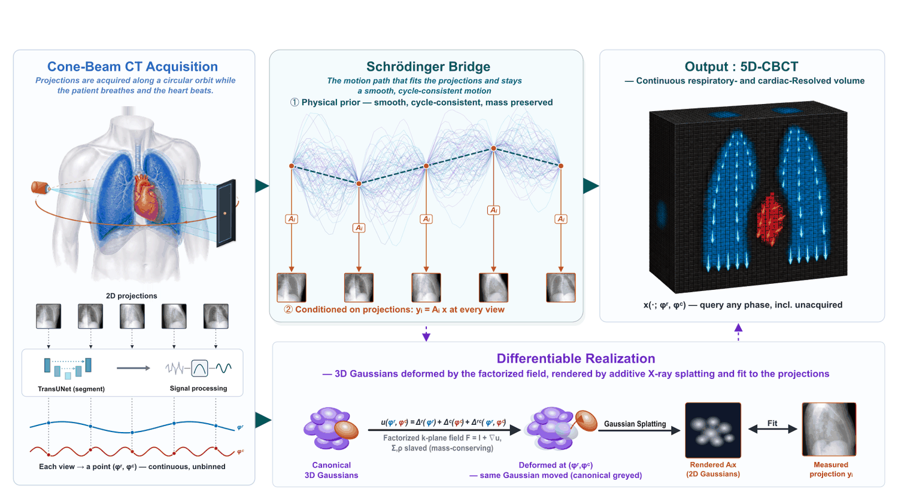

Overview
A conventional cone-beam CT assumes the patient holds still, so it averages the diaphragm and the cardiac border into gradients. Respiratory-binned 4D-CBCT sharpens one state at the price of discarding nine-tenths of the views, and resolves no cardiac motion at all. The proposed model transports a single canonical set of anisotropic Gaussians through a continuous respiratory–cardiac state, keeps every projection, and can be queried anywhere on the state torus — including states the scanner never visited.
Routine scan in, motion out
The one-minute rotation already acquired for setup. No breath-hold, no gating hardware, no extra dose.
Respiratory and cardiac state from the projections
Both signals are tracked frame by frame in the projections themselves — even without a marker block, belt or ECG.
A physics prior that conserves mass
One canonical anatomy is deformed, not re-reconstructed per bin. Shape and density follow the deformation Jacobian.
Validated on both patient data and XCAT phantom
Volumetric ground truth on twelve dual-gated phantoms; projection fidelity on three clinical Halcyon scans.
Interactive state viewer
The proposed reconstruction is shown alone by default; add any baseline beside it with Show beside ours. Step through slices with the slider, the mouse wheel over an image, or the arrow keys, then move the physiological state; the play buttons run each cycle at its own measured rate, so respiration and heartbeat keep their real ratio. Every panel shown together shares one intensity scale and one display window, fitted once over the thorax — per-panel windowing would show each method at its own best contrast. Click an image to enlarge.
Where the model puts its motion
Absolute difference between two states of the same fitted model, on the plane and slice selected above. If the gain came from a global intensity drift rather than physiological deformation, these maps would be diffuse. Instead they are edge-localized: brightest along the diaphragm dome, then the fissures, lung apex and body outline — the interfaces that actually move — while the lung interior stays dark. Each map is scaled to its own 99.8th percentile, so brightness is comparable within a map and never between them; in absolute terms the cardiac signature is far smaller, which is why it buys tenths of a decibel where respiration buys whole ones.
How the physiological state is extracted
Both signals come from the projection images themselves — no external surrogate, no marker, no extra acquisition. The video plays the acquisition frame by frame. Top: the projection with the tracked landmarks drawn on it — the two lung inferior borders and the liver apex — so a landmark that detaches from the anatomy is visible rather than inferred. Middle: those surrogates band-passed and z-scored so they are comparable, with the fused median in black; a member departing from the other two is the same failure seen as a signal. Bottom: the respiratory state and the cardiac trace the pipeline actually used, with a playhead. Nothing here is re-inferred for display — every landmark is read back from the extraction the reconstruction was driven by.
Patient results
Patients have no volumetric ground truth, so every number here is measured where truth exists — against the measured projections, over all 866 views. PSNR = 20 log10(range / RMSE), with the range taken once over the whole acquisition; the minimum is exactly zero on all three cases, so peak- and range-normalised conventions agree. These are fit metrics, not motion-accuracy metrics — the claim that the recovered motion is physically correct rests on the phantom study below.
Phantom: the same comparison, against ground truth
The XCAT cases carry a dual-gated 20 × 20 grid of truth volumes on the reconstruction's own voxel grid, so the truth can be put beside the reconstructions at the same physiological state — which is exactly what the patient study cannot do. Both cases are the same body; only the acquisition schedule differs. Ground truth is shown beside the model by default. Truth is the reference for everything here: the display window, the body mask, the plane search, and the single global scale each reconstruction is fitted with at the reference state and then held to.
Difference between two states of the fitted model, as in the patient section above.
Phantom validation
Twelve dual-gated XCAT cases, each evaluated at all 400 physiological states — including the 51 states a replayed patient schedule never visits. This is where volumetric truth exists, and the only place the recovered motion can be checked rather than the fit.
96% of excursion recovered
17.2 mm of a true 17.9 mm diaphragm travel, with 1.33 mm mean absolute dome error.
0.23 dB to estimate state
Substituting true states for projection-estimated ones gains almost nothing, so state estimation is not the limiting error.
2.3 → 0.3 dB spread
Error becomes near-uniform across the breathing cycle rather than good at one state and poor elsewhere.
Method
Reconstruction is posed as a projection-conditioned Schrödinger bridge over continuous physiological state. A canonical set of anisotropic Gaussians is transported by a factorized field u = Δr + Δc + Δrc; coupling shape and density to the deformation Jacobian makes the transport conserve mass rather than invent it.
